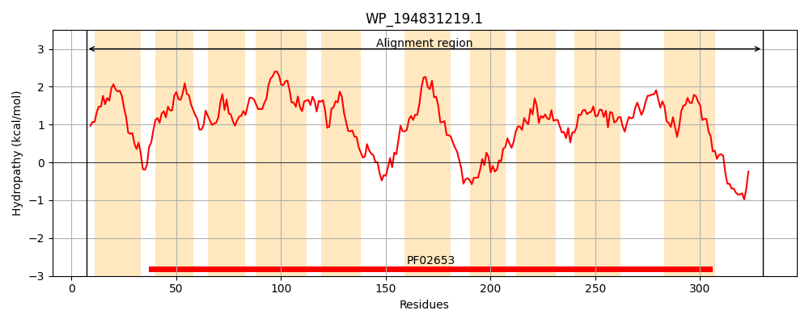
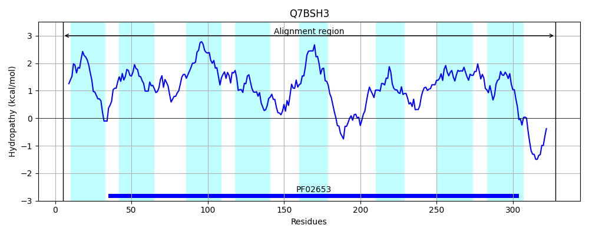
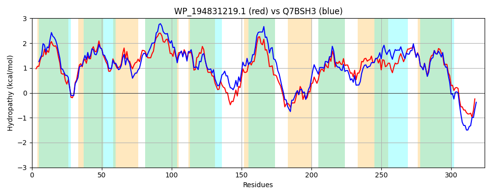

Hit Accession: Q7BSH3
Hit TCID: 3.A.1.2.9
Hit Description: gnl|BL_ORD_ID|15401 gnl|TC-DB|Q7BSH3|3.A.1.2.9 RhaP - Rhizobium leguminosarum (biovar trifolii).
Mach Len: 324
e:0.000000
Query TMS Count : 10
Hit TMS Count: 8
TMS-Overlap Score: 7.850000
Predicted Substrates:CHEBI:45460;alpha-L-rhamnopyranose
BLAST Alignment:
Score: 989 , Bit scores: 385 bits, E-value: 1.5e-134, Alignment length: 324, Percentage identity: 59
Query: 7 LKHREALLAVVIILMIGAIGSRAPSFVSPGNLVEMFNDTAILIILALGQMMVLLTKGIDLSMAANLALTGMIVALLNAHYPGIPVVALLALATLLGLLMGMINGLLVWRLGIPAIVVTLGTMSIYRGIIFLLTDGGWVNSHQMSADFLSLPRSTLLGLPLLSWCAIAALLLVGYFLRYSRTGRALYTAGGNATAAYYTGINAGKMQFVSFCLSGALAGFCGYLWISRFAVAYVDVANGFELQVIAACVIGGISTMGGSGRVLGCLCGALFLGVINNALPVIGISPFWQMAISGAVIVMAVLLNERGNRGHGRLILRNAALARQK 330
++ RE LL ++I++MI +RA F +PGNL +FNDT+ILIILAL QM V+LTK IDLS+AANLA TGM +A++NA +P +P+V L+ +A ++G +G ING LVW L IP IVVTLGT++IYRG+ F+L+ G WVN+HQM+ FLS+PR+ +LGLP+LSW I ++L+ LRY++ GR+ Y GGN TAA Y GI+ G +F++F LSGALAG YLW+SR+AVAYVD+ANGFEL +AACVIGGIS GG G V G + GALFLGVI NALPVIGISPF QMAISG VI++AV N R R GR+ILR+ A K
Sbjct: 5 IRKRETLLFLIIVVMIVVFSTRAADFATPGNLAGIFNDTSILIILALAQMTVILTKSIDLSVAANLAFTGMAIAMMNAAHPDLPLVVLILMAVVIGACLGAINGFLVWALEIPPIVVTLGTLTIYRGMAFVLSGGAWVNAHQMTPIFLSVPRTPVLGLPVLSWVGIIIVILMYVLLRYTQFGRSAYATGGNPTAAVYAGIDTGWTKFLAFVLSGALAGLASYLWVSRYAVAYVDIANGFELDSVAACVIGGISIAGGVGSVAGTVLGALFLGVIKNALPVIGISPFTQMAISGTVIILAVAFNARRERNRGRIILRDRAATEIK 328 | Protein Hydropathy Plots: |
|---|
|  |  |
Pairwise Alignment-Hydropathy Plot:
|
|---|
|  |